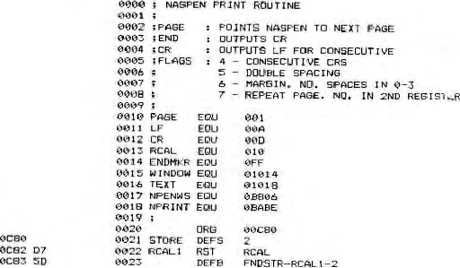

printed if double spaced mode.
The fourth flag (bit 7) is set if a page is to be repeated,
with the number of repeats being found in the second register.
This is checked at the end of each page, the marker for this
being 01, which needs to be set in 1010H for the Generate
command. If a page marker is sent to this routine then a CR is
output as a signal to the printer, then the CR flag is reset in
preparation for the next page. A check is then made for the
repeat flag. If it is not get then the Naspen Text and Window
pointers are set to the next page (lines 49 & 50) and Naspen
warm started so that it is ready to print it when asked. If the
flag is set then the stack pointer is reset by popping its top
two registers. Then, after checking that a number has been
entered into the register and that the number requested has not
been printed, the program jumps to the Naspen routine to repeat
the printing of the page.
The other two routines not yet mentioned are the start and
finish routines. The first character to be output by Naspen is a
null. When this is received, the routine jumps to LBL6, where
the mode flags are checked. The last character is 02 and this is
converted to a CR to allow the printer to finish.
While not being a very comprehensive print routine and
though the modes have to be set manually before printing, I have
found this a very useful addition and I hope that you do too.
